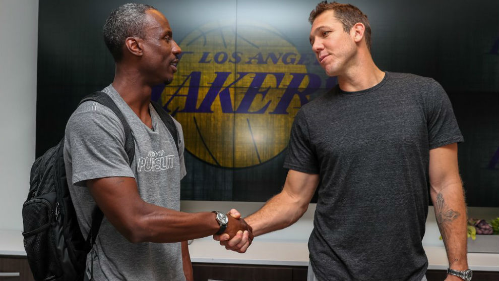

El alero Gordon Hayward, que debutó con los Celtics de Boston, sufrió esta noche una grave lesión al fracturarse el tobillo izquierdo al caer mal tras una entrada a canasta a los cinco minutos de empezar el partido inaugural de la nueva temporada de la NBA 2017-18.
Al caer tras el salto el tobillo izquierdo de Hayward giró en un ángulo tan extraño que los compañeros de equipo se quedaron en estado de shock mientras pedía ayuda desde la línea lateral. El escolta de los Cavaliers, Dwyane Wade, se arrodilló y se llevó la mano a la cabeza mientras los médicos del equipo atendían a Hayward.
Compañeros de equipo y jugadores de los Cavaliers, incluyendo al alero LeBron James, acompañaron a Hayward para darle ánimos cuando lo sacaron del campo en camilla con toda la pierna izquierda inmovilizada y en medio de una ovación de los seguidores de los Cavaliers puestos de pie. El pasado julio, los Celtics firmaron con Hayward un contrato de cuatro años y 128 millones, el primero de los dos All-Stars que adquirieron este verano.
Historion de Andre Ingram
Recibe la llamada de los Lakers tras 10 Temporadas en G-League

Para finalizar su temporada, y tras las lesiones de algunos de sus jugadores importantes como Kyle Kuzma, Lonzo Ball o Brandon Ingram, Los Ángeles Lakers anunciaron el fichaje del base Andre Ingram, de 32 años y 1,91 metros, con un contrato de 10 días.
Sin embargo, no se trata de una incorporación normal, si no de todo un historión de alguien que lleva luchando por su sueño de jugar en la NBA durante 10 temporadas y que finalmente ha recibido la llamada de la mejor liga del mundo.
Ingram lleva 10 años consecutivos jugando en la G-League, la liga de desarrollo de la NBA, tras no ser elegido por ninguna franquicia en el Draft de 2007. Desde entonces, Utah Flash, Los Angeles D-Fenders, South Bay Lakers e incluso los Perth Wildcats (de la NBL australiana) fueron sus equipos, pero sin ser reclamado por ningún equipo de la primera competición norteamericana.
En todo ese tiempo, el veterano base estableció un récord de la G-League con 713 triples anotados con un 46,1% de acierto con más de 384 partidos a sus espaldas. Pero todo cambió en este final de temporada. Ingram acudió a las oficinas de los Lakers esperando una mera reunión para dar por finalizada la campaña cuando de repente fue recibido por Magic Johnson, presidente de operaciones de baloncesto, Rob Pelinka, General Manager, y Luke Walton, entrenador de la franquicia. Allí ya se enteró que iba a firmar un contrato de 10 días para finalizar el curso con los Lakers y tener la oportunidad de debutar en la NBA después de una década de lucha.